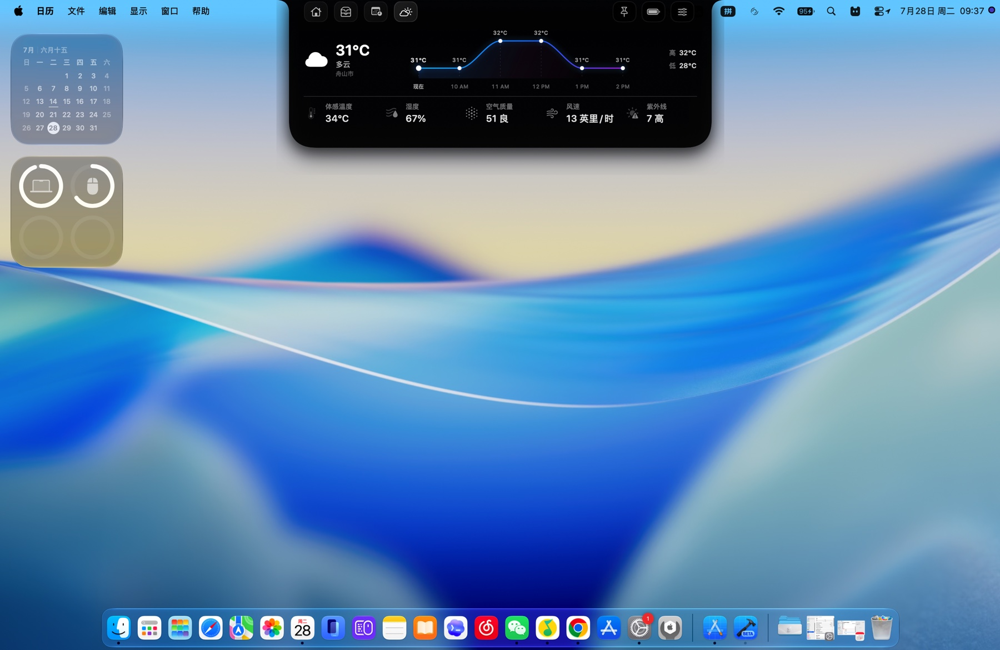

01
MUSIC, ALWAYS IN REACH
音乐与歌词，一直在场。
专辑封面、播放控制与歌词靠近刘海停放，保持当前工作节奏，不必频繁切换窗口。

为 Mac 点亮一处灵动空间。
音乐、天气、日程、提醒、暂存架与剪贴板，
常用功能，一抬眼就到。
支持 Apple 芯片与 Intel Mac
移动鼠标，让灯和小刘海跟上你
CHATNOTCH IN MOTION · 动态演示
它住在屏幕顶部，不打断正在进行的工作。需要时展开，完成后安静收起。
CHATNOTCH ON YOUR DESKTOP · 桌面外观预览
以 ChatNotch 1.0.0 的真实 Mac 截图为界面本体，只用网页交互切换展示，不重画、不改变原版 UI。

ONE NOTCH, EVERYDAY TOOLS · 一个刘海，装下日常
把最常查看的内容收进屏幕顶部。每一张界面都来自 ChatNotch 原版，而不是网页重绘。
MUSIC, ALWAYS IN REACH
专辑封面、播放控制与歌词靠近刘海停放，保持当前工作节奏，不必频繁切换窗口。
THE DAY, AT A GLANCE
月历、提醒与天气在同一条视线里展开。下一件事和此刻的环境，都更容易被看见。


DROP. KEEP. PICK UP.
隔空投送、文件暂存与剪贴板历史在同一处出现，拖入和取回都不离开当前桌面。

NATIVE BY DESIGN · 为 Mac 而生
ChatNotch 采用原生界面语言，核心数据默认留在本机。无需为了效率牺牲安静、速度与隐私。
查看完整隐私政策DOWNLOAD FOR MAC · 下载
ChatNotch 1.0 · 支持 Apple 芯片与 Intel Mac
建议使用 macOS 13 Ventura 或更高版本